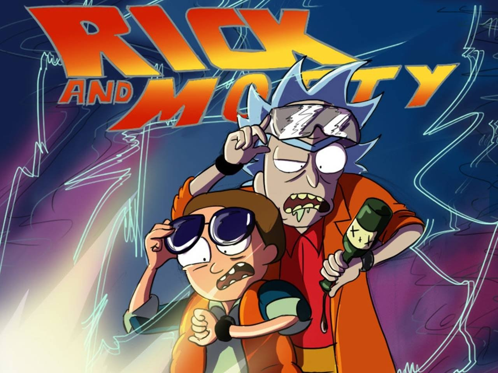
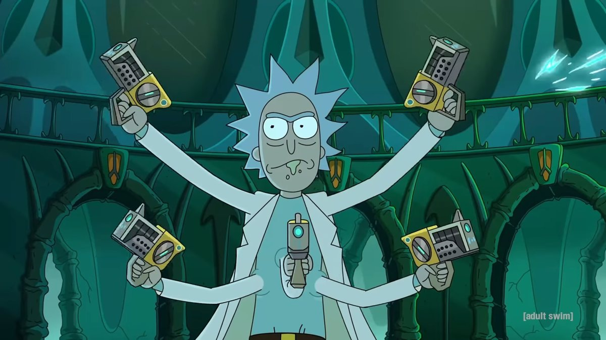
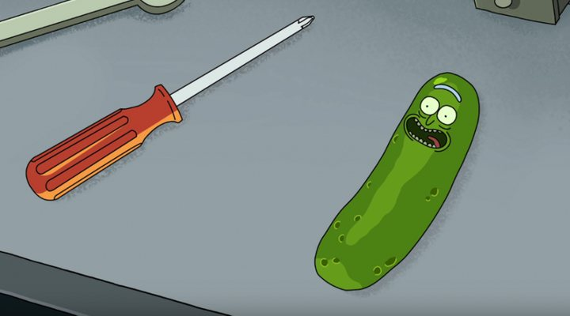
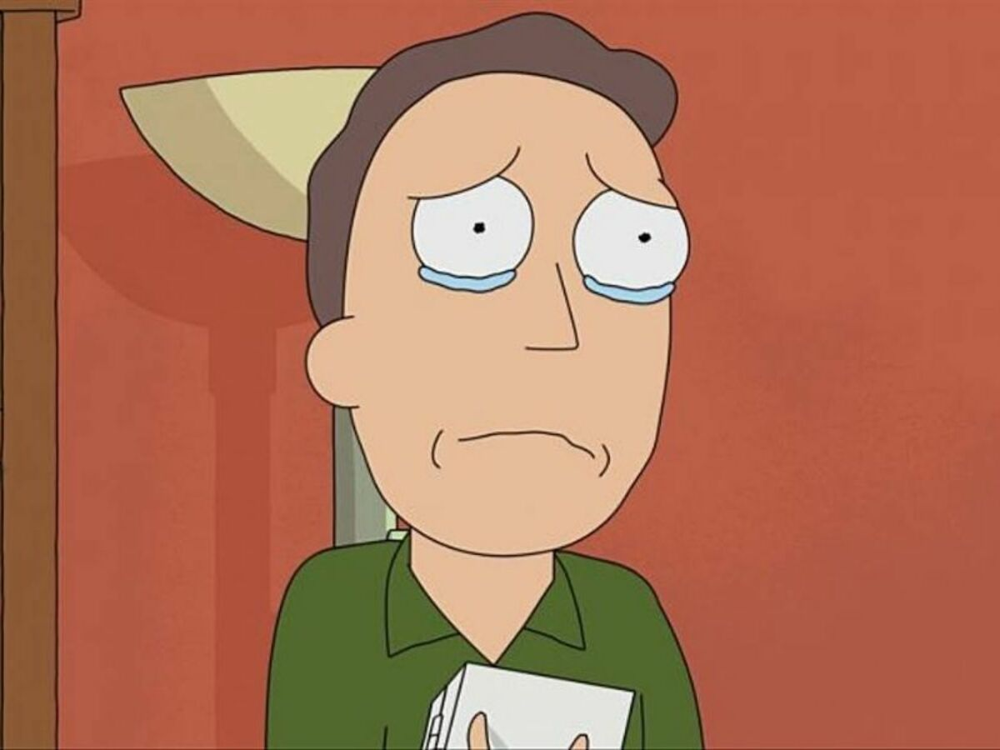

1_ Los personajes de la serie están insiprados en los personajes de regreso al futuro. Marty McFly es Morty y Rick es el Doctor Brown.

2_La canción del intro está inspirada en los temas de Doctor Who y de Farscape. Ambas series también influyen mucho en las historias y los personajes. De hecho, en el episodio "Raiing Gazorpazorp", las líderes de las mujeres garzopianas tienen las voces de las protagonistas de Farscape.
3_Dan Harmon ha dicho que Rick es una especie de conexión entre Dios y el hombre, ya que al igual que Dios, tiene una actitud desinteresada por sus creaciones. La serie es una búsqueda del significado existencial en un Universo en el que nada parece tener sentido; Rick nos muestra que no importa qué tanto lo intentemos, el mundo nunca será completamente sensato.

4_Los creadores han afirmado que Rick al ser el personaje más listo de la galaxia sabe que vive en una serie. De ahí viene su desinterés hacía casi cualquier cosa y sus ganas de vivir experiencias extremas. Como por ejemplo aquella vez en la que decidió transformarse en un pepinillo.

5_Jerry iba a ser un personaje más serio y estaba pensado como una figura paterna más influyente en Morty. Sin embargo, Roiland y Harmon decidieron cambiar eso después de escuchar la «hilarante y patética voz» de Chris Parnell. Por tanto decidieron cambiar la idea y crearon a Jerry como un personaje patético.
